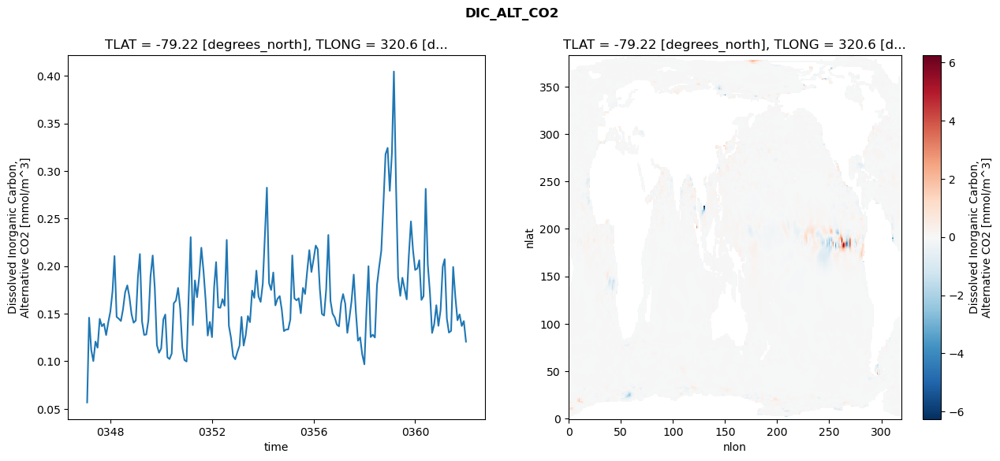
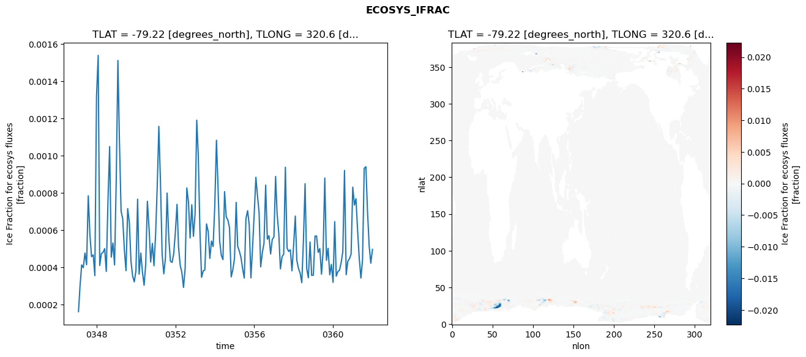
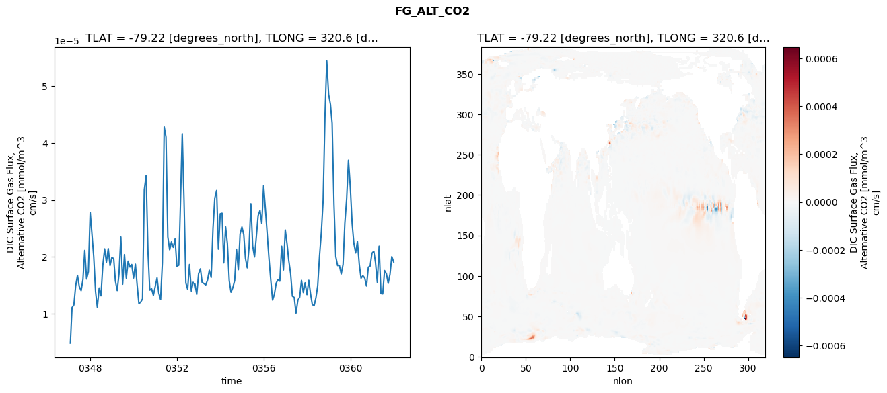
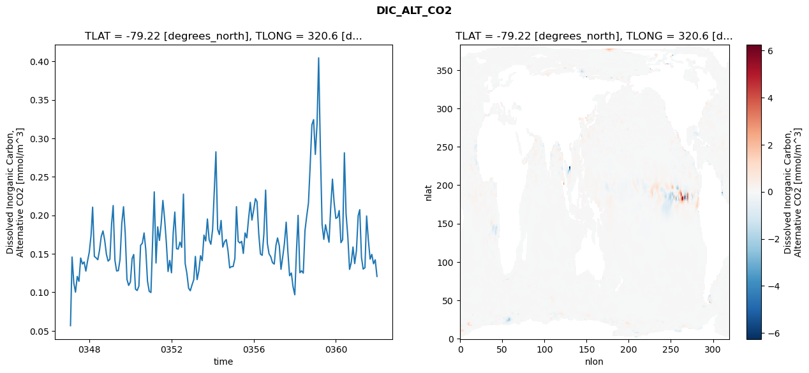
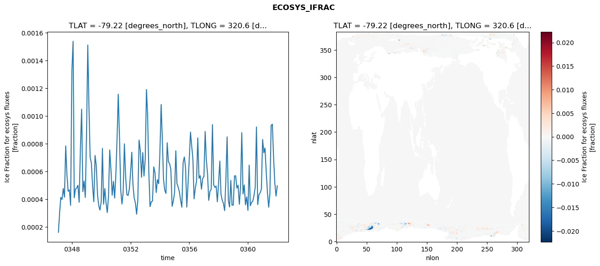
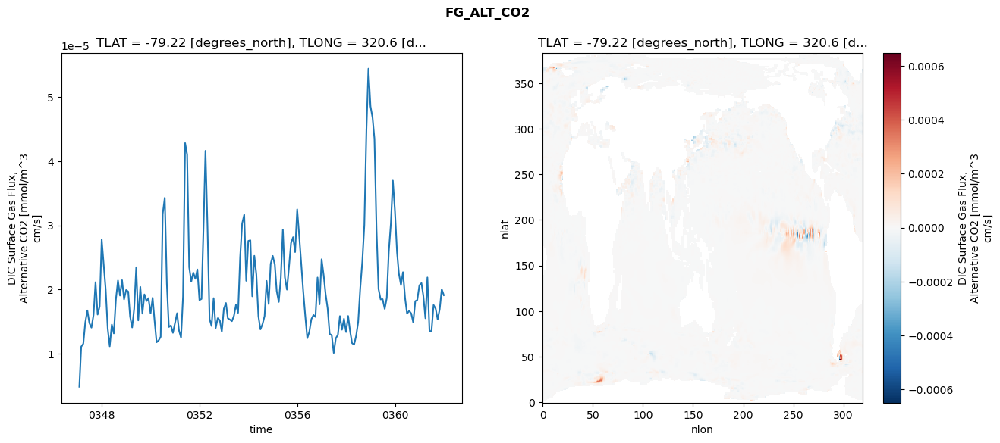

glb-dor_North_Atlantic_basin_021_1999-01-01_00084#
Simulation details#
Case: smyle.cdr-atlas-v0.glb-dor_North_Atlantic_basin_021_1999-01-01_00084.001
Basin: North_Atlantic_basin
Polygon: 21.0
Start date: 1999-01
Show code cell source Hide code cell source
import xarray as xr
import matplotlib.pyplot as plt
Show code cell source Hide code cell source
zarr_store = "/path/to/zarr/store"
# Parameters
zarr_store = "/global/cfs/projectdirs/m4746/Projects/Ocean-CDR-Atlas-v0/data/validation/smyle.cdr-atlas-v0.glb-dor_North_Atlantic_basin_021_1999-01-01_00084.001.validation.zarr"
Show code cell source Hide code cell source
%%time
ds_o = xr.open_zarr(zarr_store).compute()
ds_o
CPU times: user 647 ms, sys: 540 ms, total: 1.19 s
Wall time: 1.46 s
<xarray.Dataset> Size: 2MB
Dimensions: (nlat: 384, nlon: 320, time: 180)
Coordinates:
TLAT float64 8B -79.22
TLONG float64 8B 320.6
ULAT float64 8B -78.95
ULONG float64 8B 321.1
* time (time) object 1kB 0347-02-01 00:00:00 ... 0362-01-01 0...
z_t float32 4B 500.0
Dimensions without coordinates: nlat, nlon
Data variables:
ALK_ALT_CO2_diff (nlat, nlon) float32 492kB nan nan nan ... nan nan nan
ALK_ALT_CO2_rmse (time) float64 1kB 0.05486 0.1498 ... 0.08558 0.06903
DIC_ALT_CO2_diff (nlat, nlon) float32 492kB nan nan nan ... nan nan nan
DIC_ALT_CO2_rmse (time) float64 1kB 0.05676 0.1459 ... 0.1423 0.1207
ECOSYS_IFRAC_diff (nlat, nlon) float32 492kB nan nan nan ... nan nan nan
ECOSYS_IFRAC_rmse (time) float64 1kB 0.0001619 0.0002967 ... 0.0004965
FG_ALT_CO2_diff (nlat, nlon) float32 492kB nan nan nan ... nan nan nan
FG_ALT_CO2_rmse (time) float64 1kB 4.803e-06 1.106e-05 ... 1.909e-05xarray.Dataset
- nlat: 384
- nlon: 320
- time: 180
- TLAT()float64-79.22
- long_name :
- array of t-grid latitudes
- units :
- degrees_north
array(-79.22052261)
- TLONG()float64320.6
- long_name :
- array of t-grid longitudes
- units :
- degrees_east
array(320.56250892)
- ULAT()float64-78.95
- long_name :
- array of u-grid latitudes
- units :
- degrees_north
array(-78.95289509)
- ULONG()float64321.1
- long_name :
- array of u-grid longitudes
- units :
- degrees_east
array(321.12500894)
- time(time)object0347-02-01 00:00:00 ... 0362-01-...
- bounds :
- time_bound
- long_name :
- time
array([cftime.DatetimeNoLeap(347, 2, 1, 0, 0, 0, 0, has_year_zero=True), cftime.DatetimeNoLeap(347, 3, 1, 0, 0, 0, 0, has_year_zero=True), cftime.DatetimeNoLeap(347, 4, 1, 0, 0, 0, 0, has_year_zero=True), cftime.DatetimeNoLeap(347, 5, 1, 0, 0, 0, 0, has_year_zero=True), cftime.DatetimeNoLeap(347, 6, 1, 0, 0, 0, 0, has_year_zero=True), cftime.DatetimeNoLeap(347, 7, 1, 0, 0, 0, 0, has_year_zero=True), cftime.DatetimeNoLeap(347, 8, 1, 0, 0, 0, 0, has_year_zero=True), cftime.DatetimeNoLeap(347, 9, 1, 0, 0, 0, 0, has_year_zero=True), cftime.DatetimeNoLeap(347, 10, 1, 0, 0, 0, 0, has_year_zero=True), cftime.DatetimeNoLeap(347, 11, 1, 0, 0, 0, 0, has_year_zero=True), cftime.DatetimeNoLeap(347, 12, 1, 0, 0, 0, 0, has_year_zero=True), cftime.DatetimeNoLeap(348, 1, 1, 0, 0, 0, 0, has_year_zero=True), cftime.DatetimeNoLeap(348, 2, 1, 0, 0, 0, 0, has_year_zero=True), cftime.DatetimeNoLeap(348, 3, 1, 0, 0, 0, 0, has_year_zero=True), cftime.DatetimeNoLeap(348, 4, 1, 0, 0, 0, 0, has_year_zero=True), cftime.DatetimeNoLeap(348, 5, 1, 0, 0, 0, 0, has_year_zero=True), cftime.DatetimeNoLeap(348, 6, 1, 0, 0, 0, 0, has_year_zero=True), cftime.DatetimeNoLeap(348, 7, 1, 0, 0, 0, 0, has_year_zero=True), cftime.DatetimeNoLeap(348, 8, 1, 0, 0, 0, 0, has_year_zero=True), cftime.DatetimeNoLeap(348, 9, 1, 0, 0, 0, 0, has_year_zero=True), cftime.DatetimeNoLeap(348, 10, 1, 0, 0, 0, 0, has_year_zero=True), cftime.DatetimeNoLeap(348, 11, 1, 0, 0, 0, 0, has_year_zero=True), cftime.DatetimeNoLeap(348, 12, 1, 0, 0, 0, 0, has_year_zero=True), cftime.DatetimeNoLeap(349, 1, 1, 0, 0, 0, 0, has_year_zero=True), cftime.DatetimeNoLeap(349, 2, 1, 0, 0, 0, 0, has_year_zero=True), cftime.DatetimeNoLeap(349, 3, 1, 0, 0, 0, 0, has_year_zero=True), cftime.DatetimeNoLeap(349, 4, 1, 0, 0, 0, 0, has_year_zero=True), cftime.DatetimeNoLeap(349, 5, 1, 0, 0, 0, 0, has_year_zero=True), cftime.DatetimeNoLeap(349, 6, 1, 0, 0, 0, 0, has_year_zero=True), cftime.DatetimeNoLeap(349, 7, 1, 0, 0, 0, 0, has_year_zero=True), cftime.DatetimeNoLeap(349, 8, 1, 0, 0, 0, 0, has_year_zero=True), cftime.DatetimeNoLeap(349, 9, 1, 0, 0, 0, 0, has_year_zero=True), cftime.DatetimeNoLeap(349, 10, 1, 0, 0, 0, 0, has_year_zero=True), cftime.DatetimeNoLeap(349, 11, 1, 0, 0, 0, 0, has_year_zero=True), cftime.DatetimeNoLeap(349, 12, 1, 0, 0, 0, 0, has_year_zero=True), cftime.DatetimeNoLeap(350, 1, 1, 0, 0, 0, 0, has_year_zero=True), cftime.DatetimeNoLeap(350, 2, 1, 0, 0, 0, 0, has_year_zero=True), cftime.DatetimeNoLeap(350, 3, 1, 0, 0, 0, 0, has_year_zero=True), cftime.DatetimeNoLeap(350, 4, 1, 0, 0, 0, 0, has_year_zero=True), cftime.DatetimeNoLeap(350, 5, 1, 0, 0, 0, 0, has_year_zero=True), cftime.DatetimeNoLeap(350, 6, 1, 0, 0, 0, 0, has_year_zero=True), cftime.DatetimeNoLeap(350, 7, 1, 0, 0, 0, 0, has_year_zero=True), cftime.DatetimeNoLeap(350, 8, 1, 0, 0, 0, 0, has_year_zero=True), cftime.DatetimeNoLeap(350, 9, 1, 0, 0, 0, 0, has_year_zero=True), cftime.DatetimeNoLeap(350, 10, 1, 0, 0, 0, 0, has_year_zero=True), cftime.DatetimeNoLeap(350, 11, 1, 0, 0, 0, 0, has_year_zero=True), cftime.DatetimeNoLeap(350, 12, 1, 0, 0, 0, 0, has_year_zero=True), cftime.DatetimeNoLeap(351, 1, 1, 0, 0, 0, 0, has_year_zero=True), cftime.DatetimeNoLeap(351, 2, 1, 0, 0, 0, 0, has_year_zero=True), cftime.DatetimeNoLeap(351, 3, 1, 0, 0, 0, 0, has_year_zero=True), cftime.DatetimeNoLeap(351, 4, 1, 0, 0, 0, 0, has_year_zero=True), cftime.DatetimeNoLeap(351, 5, 1, 0, 0, 0, 0, has_year_zero=True), cftime.DatetimeNoLeap(351, 6, 1, 0, 0, 0, 0, has_year_zero=True), cftime.DatetimeNoLeap(351, 7, 1, 0, 0, 0, 0, has_year_zero=True), cftime.DatetimeNoLeap(351, 8, 1, 0, 0, 0, 0, has_year_zero=True), cftime.DatetimeNoLeap(351, 9, 1, 0, 0, 0, 0, has_year_zero=True), cftime.DatetimeNoLeap(351, 10, 1, 0, 0, 0, 0, has_year_zero=True), cftime.DatetimeNoLeap(351, 11, 1, 0, 0, 0, 0, has_year_zero=True), cftime.DatetimeNoLeap(351, 12, 1, 0, 0, 0, 0, has_year_zero=True), cftime.DatetimeNoLeap(352, 1, 1, 0, 0, 0, 0, has_year_zero=True), cftime.DatetimeNoLeap(352, 2, 1, 0, 0, 0, 0, has_year_zero=True), cftime.DatetimeNoLeap(352, 3, 1, 0, 0, 0, 0, has_year_zero=True), cftime.DatetimeNoLeap(352, 4, 1, 0, 0, 0, 0, has_year_zero=True), cftime.DatetimeNoLeap(352, 5, 1, 0, 0, 0, 0, has_year_zero=True), cftime.DatetimeNoLeap(352, 6, 1, 0, 0, 0, 0, has_year_zero=True), cftime.DatetimeNoLeap(352, 7, 1, 0, 0, 0, 0, has_year_zero=True), cftime.DatetimeNoLeap(352, 8, 1, 0, 0, 0, 0, has_year_zero=True), cftime.DatetimeNoLeap(352, 9, 1, 0, 0, 0, 0, has_year_zero=True), cftime.DatetimeNoLeap(352, 10, 1, 0, 0, 0, 0, has_year_zero=True), cftime.DatetimeNoLeap(352, 11, 1, 0, 0, 0, 0, has_year_zero=True), cftime.DatetimeNoLeap(352, 12, 1, 0, 0, 0, 0, has_year_zero=True), cftime.DatetimeNoLeap(353, 1, 1, 0, 0, 0, 0, has_year_zero=True), cftime.DatetimeNoLeap(353, 2, 1, 0, 0, 0, 0, has_year_zero=True), cftime.DatetimeNoLeap(353, 3, 1, 0, 0, 0, 0, has_year_zero=True), cftime.DatetimeNoLeap(353, 4, 1, 0, 0, 0, 0, has_year_zero=True), cftime.DatetimeNoLeap(353, 5, 1, 0, 0, 0, 0, has_year_zero=True), cftime.DatetimeNoLeap(353, 6, 1, 0, 0, 0, 0, has_year_zero=True), cftime.DatetimeNoLeap(353, 7, 1, 0, 0, 0, 0, has_year_zero=True), cftime.DatetimeNoLeap(353, 8, 1, 0, 0, 0, 0, has_year_zero=True), cftime.DatetimeNoLeap(353, 9, 1, 0, 0, 0, 0, has_year_zero=True), cftime.DatetimeNoLeap(353, 10, 1, 0, 0, 0, 0, has_year_zero=True), cftime.DatetimeNoLeap(353, 11, 1, 0, 0, 0, 0, has_year_zero=True), cftime.DatetimeNoLeap(353, 12, 1, 0, 0, 0, 0, has_year_zero=True), cftime.DatetimeNoLeap(354, 1, 1, 0, 0, 0, 0, has_year_zero=True), cftime.DatetimeNoLeap(354, 2, 1, 0, 0, 0, 0, has_year_zero=True), cftime.DatetimeNoLeap(354, 3, 1, 0, 0, 0, 0, has_year_zero=True), cftime.DatetimeNoLeap(354, 4, 1, 0, 0, 0, 0, has_year_zero=True), cftime.DatetimeNoLeap(354, 5, 1, 0, 0, 0, 0, has_year_zero=True), cftime.DatetimeNoLeap(354, 6, 1, 0, 0, 0, 0, has_year_zero=True), cftime.DatetimeNoLeap(354, 7, 1, 0, 0, 0, 0, has_year_zero=True), cftime.DatetimeNoLeap(354, 8, 1, 0, 0, 0, 0, has_year_zero=True), cftime.DatetimeNoLeap(354, 9, 1, 0, 0, 0, 0, has_year_zero=True), cftime.DatetimeNoLeap(354, 10, 1, 0, 0, 0, 0, has_year_zero=True), cftime.DatetimeNoLeap(354, 11, 1, 0, 0, 0, 0, has_year_zero=True), cftime.DatetimeNoLeap(354, 12, 1, 0, 0, 0, 0, has_year_zero=True), cftime.DatetimeNoLeap(355, 1, 1, 0, 0, 0, 0, has_year_zero=True), cftime.DatetimeNoLeap(355, 2, 1, 0, 0, 0, 0, has_year_zero=True), cftime.DatetimeNoLeap(355, 3, 1, 0, 0, 0, 0, has_year_zero=True), cftime.DatetimeNoLeap(355, 4, 1, 0, 0, 0, 0, has_year_zero=True), cftime.DatetimeNoLeap(355, 5, 1, 0, 0, 0, 0, has_year_zero=True), cftime.DatetimeNoLeap(355, 6, 1, 0, 0, 0, 0, has_year_zero=True), cftime.DatetimeNoLeap(355, 7, 1, 0, 0, 0, 0, has_year_zero=True), cftime.DatetimeNoLeap(355, 8, 1, 0, 0, 0, 0, has_year_zero=True), cftime.DatetimeNoLeap(355, 9, 1, 0, 0, 0, 0, has_year_zero=True), cftime.DatetimeNoLeap(355, 10, 1, 0, 0, 0, 0, has_year_zero=True), cftime.DatetimeNoLeap(355, 11, 1, 0, 0, 0, 0, has_year_zero=True), cftime.DatetimeNoLeap(355, 12, 1, 0, 0, 0, 0, has_year_zero=True), cftime.DatetimeNoLeap(356, 1, 1, 0, 0, 0, 0, has_year_zero=True), cftime.DatetimeNoLeap(356, 2, 1, 0, 0, 0, 0, has_year_zero=True), cftime.DatetimeNoLeap(356, 3, 1, 0, 0, 0, 0, has_year_zero=True), cftime.DatetimeNoLeap(356, 4, 1, 0, 0, 0, 0, has_year_zero=True), cftime.DatetimeNoLeap(356, 5, 1, 0, 0, 0, 0, has_year_zero=True), cftime.DatetimeNoLeap(356, 6, 1, 0, 0, 0, 0, has_year_zero=True), cftime.DatetimeNoLeap(356, 7, 1, 0, 0, 0, 0, has_year_zero=True), cftime.DatetimeNoLeap(356, 8, 1, 0, 0, 0, 0, has_year_zero=True), cftime.DatetimeNoLeap(356, 9, 1, 0, 0, 0, 0, has_year_zero=True), cftime.DatetimeNoLeap(356, 10, 1, 0, 0, 0, 0, has_year_zero=True), cftime.DatetimeNoLeap(356, 11, 1, 0, 0, 0, 0, has_year_zero=True), cftime.DatetimeNoLeap(356, 12, 1, 0, 0, 0, 0, has_year_zero=True), cftime.DatetimeNoLeap(357, 1, 1, 0, 0, 0, 0, has_year_zero=True), cftime.DatetimeNoLeap(357, 2, 1, 0, 0, 0, 0, has_year_zero=True), cftime.DatetimeNoLeap(357, 3, 1, 0, 0, 0, 0, has_year_zero=True), cftime.DatetimeNoLeap(357, 4, 1, 0, 0, 0, 0, has_year_zero=True), cftime.DatetimeNoLeap(357, 5, 1, 0, 0, 0, 0, has_year_zero=True), cftime.DatetimeNoLeap(357, 6, 1, 0, 0, 0, 0, has_year_zero=True), cftime.DatetimeNoLeap(357, 7, 1, 0, 0, 0, 0, has_year_zero=True), cftime.DatetimeNoLeap(357, 8, 1, 0, 0, 0, 0, has_year_zero=True), cftime.DatetimeNoLeap(357, 9, 1, 0, 0, 0, 0, has_year_zero=True), cftime.DatetimeNoLeap(357, 10, 1, 0, 0, 0, 0, has_year_zero=True), cftime.DatetimeNoLeap(357, 11, 1, 0, 0, 0, 0, has_year_zero=True), cftime.DatetimeNoLeap(357, 12, 1, 0, 0, 0, 0, has_year_zero=True), cftime.DatetimeNoLeap(358, 1, 1, 0, 0, 0, 0, has_year_zero=True), cftime.DatetimeNoLeap(358, 2, 1, 0, 0, 0, 0, has_year_zero=True), cftime.DatetimeNoLeap(358, 3, 1, 0, 0, 0, 0, has_year_zero=True), cftime.DatetimeNoLeap(358, 4, 1, 0, 0, 0, 0, has_year_zero=True), cftime.DatetimeNoLeap(358, 5, 1, 0, 0, 0, 0, has_year_zero=True), cftime.DatetimeNoLeap(358, 6, 1, 0, 0, 0, 0, has_year_zero=True), cftime.DatetimeNoLeap(358, 7, 1, 0, 0, 0, 0, has_year_zero=True), cftime.DatetimeNoLeap(358, 8, 1, 0, 0, 0, 0, has_year_zero=True), cftime.DatetimeNoLeap(358, 9, 1, 0, 0, 0, 0, has_year_zero=True), cftime.DatetimeNoLeap(358, 10, 1, 0, 0, 0, 0, has_year_zero=True), cftime.DatetimeNoLeap(358, 11, 1, 0, 0, 0, 0, has_year_zero=True), cftime.DatetimeNoLeap(358, 12, 1, 0, 0, 0, 0, has_year_zero=True), cftime.DatetimeNoLeap(359, 1, 1, 0, 0, 0, 0, has_year_zero=True), cftime.DatetimeNoLeap(359, 2, 1, 0, 0, 0, 0, has_year_zero=True), cftime.DatetimeNoLeap(359, 3, 1, 0, 0, 0, 0, has_year_zero=True), cftime.DatetimeNoLeap(359, 4, 1, 0, 0, 0, 0, has_year_zero=True), cftime.DatetimeNoLeap(359, 5, 1, 0, 0, 0, 0, has_year_zero=True), cftime.DatetimeNoLeap(359, 6, 1, 0, 0, 0, 0, has_year_zero=True), cftime.DatetimeNoLeap(359, 7, 1, 0, 0, 0, 0, has_year_zero=True), cftime.DatetimeNoLeap(359, 8, 1, 0, 0, 0, 0, has_year_zero=True), cftime.DatetimeNoLeap(359, 9, 1, 0, 0, 0, 0, has_year_zero=True), cftime.DatetimeNoLeap(359, 10, 1, 0, 0, 0, 0, has_year_zero=True), cftime.DatetimeNoLeap(359, 11, 1, 0, 0, 0, 0, has_year_zero=True), cftime.DatetimeNoLeap(359, 12, 1, 0, 0, 0, 0, has_year_zero=True), cftime.DatetimeNoLeap(360, 1, 1, 0, 0, 0, 0, has_year_zero=True), cftime.DatetimeNoLeap(360, 2, 1, 0, 0, 0, 0, has_year_zero=True), cftime.DatetimeNoLeap(360, 3, 1, 0, 0, 0, 0, has_year_zero=True), cftime.DatetimeNoLeap(360, 4, 1, 0, 0, 0, 0, has_year_zero=True), cftime.DatetimeNoLeap(360, 5, 1, 0, 0, 0, 0, has_year_zero=True), cftime.DatetimeNoLeap(360, 6, 1, 0, 0, 0, 0, has_year_zero=True), cftime.DatetimeNoLeap(360, 7, 1, 0, 0, 0, 0, has_year_zero=True), cftime.DatetimeNoLeap(360, 8, 1, 0, 0, 0, 0, has_year_zero=True), cftime.DatetimeNoLeap(360, 9, 1, 0, 0, 0, 0, has_year_zero=True), cftime.DatetimeNoLeap(360, 10, 1, 0, 0, 0, 0, has_year_zero=True), cftime.DatetimeNoLeap(360, 11, 1, 0, 0, 0, 0, has_year_zero=True), cftime.DatetimeNoLeap(360, 12, 1, 0, 0, 0, 0, has_year_zero=True), cftime.DatetimeNoLeap(361, 1, 1, 0, 0, 0, 0, has_year_zero=True), cftime.DatetimeNoLeap(361, 2, 1, 0, 0, 0, 0, has_year_zero=True), cftime.DatetimeNoLeap(361, 3, 1, 0, 0, 0, 0, has_year_zero=True), cftime.DatetimeNoLeap(361, 4, 1, 0, 0, 0, 0, has_year_zero=True), cftime.DatetimeNoLeap(361, 5, 1, 0, 0, 0, 0, has_year_zero=True), cftime.DatetimeNoLeap(361, 6, 1, 0, 0, 0, 0, has_year_zero=True), cftime.DatetimeNoLeap(361, 7, 1, 0, 0, 0, 0, has_year_zero=True), cftime.DatetimeNoLeap(361, 8, 1, 0, 0, 0, 0, has_year_zero=True), cftime.DatetimeNoLeap(361, 9, 1, 0, 0, 0, 0, has_year_zero=True), cftime.DatetimeNoLeap(361, 10, 1, 0, 0, 0, 0, has_year_zero=True), cftime.DatetimeNoLeap(361, 11, 1, 0, 0, 0, 0, has_year_zero=True), cftime.DatetimeNoLeap(361, 12, 1, 0, 0, 0, 0, has_year_zero=True), cftime.DatetimeNoLeap(362, 1, 1, 0, 0, 0, 0, has_year_zero=True)], dtype=object) - z_t()float32500.0
- long_name :
- depth from surface to midpoint of layer
- positive :
- down
- units :
- centimeters
- valid_max :
- 537500.0
- valid_min :
- 500.0
array(500., dtype=float32)
- ALK_ALT_CO2_diff(nlat, nlon)float32nan nan nan nan ... nan nan nan nan
- cell_methods :
- time: mean
- grid_loc :
- 3111
- long_name :
- Alkalinity, Alternative CO2
- units :
- meq/m^3
array([[ nan, nan, nan, ..., nan, nan, nan], [ nan, nan, nan, ..., nan, nan, nan], [0.06152344, 0.03491211, 0.0300293 , ..., nan, nan, nan], ..., [ nan, nan, nan, ..., nan, nan, nan], [ nan, nan, nan, ..., nan, nan, nan], [ nan, nan, nan, ..., nan, nan, nan]], dtype=float32) - ALK_ALT_CO2_rmse(time)float640.05486 0.1498 ... 0.08558 0.06903
- cell_methods :
- time: mean
- grid_loc :
- 3111
- long_name :
- Alkalinity, Alternative CO2
- units :
- meq/m^3
array([0.0548556 , 0.1498494 , 0.09911069, 0.07829374, 0.10487617, 0.07655153, 0.11603403, 0.06614757, 0.07758415, 0.06259002, 0.05808371, 0.06028083, 0.11053567, 0.18933575, 0.11194366, 0.120478 , 0.11443065, 0.10846429, 0.12671527, 0.12932611, 0.10524564, 0.06906247, 0.06421404, 0.09148126, 0.164875 , 0.20163585, 0.10951987, 0.10396426, 0.1054288 , 0.11775882, 0.17564775, 0.19249433, 0.13992584, 0.07440004, 0.05449188, 0.05402379, 0.09249928, 0.10926759, 0.06613144, 0.07154258, 0.08230281, 0.1391055 , 0.12883466, 0.15317504, 0.11964535, 0.07638266, 0.05650987, 0.05686134, 0.15449995, 0.23618483, 0.11988729, 0.17605844, 0.12481189, 0.14301928, 0.19892923, 0.17991582, 0.10420476, 0.07352838, 0.0771771 , 0.06861993, 0.14580416, 0.18931178, 0.12211417, 0.11588003, 0.13902646, 0.13728422, 0.21794121, 0.1085659 , 0.08204175, 0.06025978, 0.05264366, 0.05936002, 0.07406194, 0.12242941, 0.08865337, 0.10809517, 0.13839416, 0.12284739, 0.17161862, 0.10562918, 0.08050205, 0.08873267, 0.08546852, 0.08616035, 0.17734618, 0.26879433, 0.1389051 , 0.11886026, 0.15840325, 0.11748396, 0.13649806, 0.13067468, 0.1073802 , 0.07421056, 0.07328455, 0.07439881, 0.10012745, 0.17147726, 0.11257455, 0.1042376 , 0.13638031, 0.11143057, 0.15391002, 0.13539926, 0.09843048, 0.10912512, 0.08219387, 0.08498191, 0.11633216, 0.15338864, 0.10142414, 0.09152757, 0.10233023, 0.13365901, 0.20936738, 0.12381785, 0.07148278, 0.07428438, 0.07023911, 0.06891925, 0.10553037, 0.13233653, 0.13369345, 0.09742876, 0.12448449, 0.13677656, 0.16789408, 0.11720178, 0.07582455, 0.0767898 , 0.05782447, 0.0541981 , 0.14752322, 0.20332836, 0.11111729, 0.12220428, 0.10699261, 0.14239817, 0.14814966, 0.13441614, 0.12470191, 0.11246635, 0.12399468, 0.11691866, 0.16207729, 0.21121543, 0.12664784, 0.10280448, 0.11747108, 0.15540564, 0.14611538, 0.10020017, 0.10685792, 0.1099553 , 0.10604014, 0.1087069 , 0.12951597, 0.14149282, 0.09655966, 0.13171868, 0.28088837, 0.18062195, 0.14422293, 0.08297828, 0.10318149, 0.12945166, 0.08985859, 0.09027966, 0.15813582, 0.1743853 , 0.09390681, 0.08995493, 0.10716344, 0.18500715, 0.14382245, 0.10285288, 0.12051445, 0.09155442, 0.08557615, 0.06903357]) - DIC_ALT_CO2_diff(nlat, nlon)float32nan nan nan nan ... nan nan nan nan
- cell_methods :
- time: mean
- grid_loc :
- 3111
- long_name :
- Dissolved Inorganic Carbon, Alternative CO2
- units :
- mmol/m^3
array([[ nan, nan, nan, ..., nan, nan, nan], [ nan, nan, nan, ..., nan, nan, nan], [0.07202148, 0.04418945, 0.04833984, ..., nan, nan, nan], ..., [ nan, nan, nan, ..., nan, nan, nan], [ nan, nan, nan, ..., nan, nan, nan], [ nan, nan, nan, ..., nan, nan, nan]], dtype=float32) - DIC_ALT_CO2_rmse(time)float640.05676 0.1459 ... 0.1423 0.1207
- cell_methods :
- time: mean
- grid_loc :
- 3111
- long_name :
- Dissolved Inorganic Carbon, Alternative CO2
- units :
- mmol/m^3
array([0.05675817, 0.14585364, 0.11184154, 0.10024168, 0.12072061, 0.11428483, 0.14458183, 0.13684191, 0.13941389, 0.12758358, 0.1406749 , 0.15240708, 0.17381921, 0.21058294, 0.1466635 , 0.14483603, 0.14236484, 0.15442705, 0.17255482, 0.17977779, 0.16789022, 0.14945746, 0.14055828, 0.14285838, 0.18903489, 0.21270499, 0.14177151, 0.12778204, 0.12819152, 0.14294132, 0.18948232, 0.2111875 , 0.17691711, 0.11693772, 0.10898907, 0.11346019, 0.14396893, 0.14917417, 0.10424944, 0.10240975, 0.10812744, 0.16106528, 0.16382411, 0.1770988 , 0.15567157, 0.11440469, 0.10135677, 0.09979652, 0.17024534, 0.2304471 , 0.13807359, 0.18501067, 0.16744084, 0.18849536, 0.21933786, 0.19508359, 0.16498097, 0.12708259, 0.14140696, 0.12540118, 0.17797054, 0.20422837, 0.15662607, 0.1562308 , 0.1653213 , 0.1583905 , 0.22753873, 0.13730825, 0.12476222, 0.1053858 , 0.10210186, 0.10975162, 0.1165052 , 0.14664039, 0.11657434, 0.12765669, 0.14756964, 0.14112407, 0.17430495, 0.16664424, 0.19525612, 0.16810708, 0.16243393, 0.18150442, 0.23334973, 0.2824659 , 0.18214805, 0.1749753 , 0.19333258, 0.15873642, 0.1657086 , 0.16853726, 0.15424414, 0.13174509, 0.13338447, 0.13345269, 0.14406213, 0.21125826, 0.16613176, 0.1640702 , 0.16626806, 0.15052275, 0.17713152, 0.170765 , 0.19485449, 0.2168021 , 0.19391057, 0.20714602, 0.22162507, 0.21782324, 0.17605026, 0.14975508, 0.14808294, 0.17565132, 0.23275072, 0.16354857, 0.14999877, 0.14612319, 0.13860786, 0.13674009, 0.16125377, 0.17063097, 0.16048948, 0.12991296, 0.14616989, 0.16358058, 0.19110398, 0.15179241, 0.12158237, 0.12513457, 0.10722473, 0.09684578, 0.15542543, 0.19994679, 0.12548982, 0.12797003, 0.12500646, 0.18015519, 0.19898952, 0.21601991, 0.26427386, 0.31757993, 0.32424272, 0.27910274, 0.31924114, 0.40450909, 0.28404167, 0.18817753, 0.16880367, 0.18775504, 0.17642339, 0.1651001 , 0.21003046, 0.24694208, 0.21650181, 0.19596955, 0.19759672, 0.20617704, 0.16450981, 0.1684557 , 0.28120059, 0.20188103, 0.17223993, 0.12982086, 0.13877588, 0.15890812, 0.13731229, 0.1539532 , 0.1995325 , 0.20727359, 0.14502437, 0.13020581, 0.13200015, 0.1991511 , 0.16784305, 0.143142 , 0.14930565, 0.13710899, 0.14229017, 0.12067274]) - ECOSYS_IFRAC_diff(nlat, nlon)float32nan nan nan nan ... nan nan nan nan
- cell_methods :
- time: mean
- grid_loc :
- 2110
- long_name :
- Ice Fraction for ecosys fluxes
- units :
- fraction
array([[ nan, nan, nan, ..., nan, nan, nan], [ nan, nan, nan, ..., nan, nan, nan], [-2.1129847e-04, -8.3148479e-05, -2.6959181e-04, ..., nan, nan, nan], ..., [ nan, nan, nan, ..., nan, nan, nan], [ nan, nan, nan, ..., nan, nan, nan], [ nan, nan, nan, ..., nan, nan, nan]], dtype=float32) - ECOSYS_IFRAC_rmse(time)float640.0001619 0.0002967 ... 0.0004965
- cell_methods :
- time: mean
- grid_loc :
- 2110
- long_name :
- Ice Fraction for ecosys fluxes
- units :
- fraction
array([0.00016187, 0.00029666, 0.00041303, 0.00039801, 0.00047699, 0.00041387, 0.00078424, 0.00057322, 0.00045716, 0.00046681, 0.00035524, 0.00131922, 0.00153823, 0.00041004, 0.00047362, 0.00048008, 0.00050052, 0.00037798, 0.00075999, 0.00104866, 0.00045465, 0.00053053, 0.00041252, 0.00086849, 0.00151114, 0.00108173, 0.00070078, 0.0006611 , 0.00049303, 0.0003818 , 0.00071546, 0.00064014, 0.00043228, 0.00035243, 0.00032157, 0.00038244, 0.00076602, 0.00036312, 0.00047703, 0.00037516, 0.00030366, 0.00041743, 0.00075478, 0.00060992, 0.00042827, 0.0005285 , 0.00040822, 0.00058189, 0.00085234, 0.00115713, 0.00084813, 0.0004696 , 0.00036515, 0.00044909, 0.00079886, 0.00055845, 0.00043291, 0.00042639, 0.00047233, 0.00058889, 0.00073838, 0.00050773, 0.00040995, 0.00037306, 0.00029209, 0.00039503, 0.00082628, 0.00075058, 0.0005575 , 0.00073595, 0.00056651, 0.00068628, 0.00119035, 0.00100463, 0.00059387, 0.00034629, 0.00038122, 0.00038599, 0.0006331 , 0.00059204, 0.0004478 , 0.00054108, 0.00051137, 0.00073294, 0.00108241, 0.00084252, 0.00054176, 0.00046572, 0.00044115, 0.00080645, 0.00067026, 0.00065397, 0.00061128, 0.00034873, 0.00038619, 0.00044767, 0.00074897, 0.00051294, 0.0004865 , 0.00045245, 0.00039059, 0.00034218, 0.00066187, 0.00070423, 0.00062698, 0.00034329, 0.0005051 , 0.00068637, 0.00088348, 0.00078875, 0.00069585, 0.00040258, 0.00048014, 0.00052845, 0.00084151, 0.00055099, 0.00056996, 0.00047183, 0.00054925, 0.00056356, 0.00088808, 0.00068709, 0.00058241, 0.00039146, 0.00045717, 0.00047094, 0.00093759, 0.00050423, 0.00048503, 0.00049444, 0.00038108, 0.00052055, 0.00067522, 0.00043769, 0.0003936 , 0.00036894, 0.00031759, 0.00053979, 0.00084904, 0.0003909 , 0.00034377, 0.00053583, 0.00035632, 0.00035797, 0.00056768, 0.00056894, 0.00047982, 0.00050096, 0.00036286, 0.00048531, 0.00087953, 0.0004376 , 0.00050242, 0.00035976, 0.00041595, 0.00031914, 0.00064522, 0.00035223, 0.00037739, 0.00038441, 0.00042684, 0.00048532, 0.00092038, 0.00036061, 0.00043211, 0.00044593, 0.00047081, 0.00083053, 0.0007346 , 0.00076867, 0.00059604, 0.00044915, 0.00034206, 0.00043982, 0.00093179, 0.0009403 , 0.00069992, 0.00051454, 0.00042225, 0.00049654]) - FG_ALT_CO2_diff(nlat, nlon)float32nan nan nan nan ... nan nan nan nan
- cell_methods :
- time: mean
- grid_loc :
- 2110
- long_name :
- DIC Surface Gas Flux, Alternative CO2
- units :
- mmol/m^3 cm/s
array([[ nan, nan, nan, ..., nan, nan, nan], [ nan, nan, nan, ..., nan, nan, nan], [1.2127316e-07, 6.5372660e-08, 1.8767059e-07, ..., nan, nan, nan], ..., [ nan, nan, nan, ..., nan, nan, nan], [ nan, nan, nan, ..., nan, nan, nan], [ nan, nan, nan, ..., nan, nan, nan]], dtype=float32) - FG_ALT_CO2_rmse(time)float644.803e-06 1.106e-05 ... 1.909e-05
- cell_methods :
- time: mean
- grid_loc :
- 2110
- long_name :
- DIC Surface Gas Flux, Alternative CO2
- units :
- mmol/m^3 cm/s
array([4.80251136e-06, 1.10557428e-05, 1.15224622e-05, 1.48583561e-05, 1.67202357e-05, 1.47580731e-05, 1.40322641e-05, 1.60135350e-05, 2.11317944e-05, 1.60756421e-05, 1.73469600e-05, 2.78095687e-05, 2.36468442e-05, 2.00267837e-05, 1.38782376e-05, 1.11126926e-05, 1.45073215e-05, 1.31303166e-05, 1.84411665e-05, 2.13960791e-05, 1.90408945e-05, 2.14433012e-05, 1.84527914e-05, 1.99065125e-05, 1.96649357e-05, 1.57646411e-05, 1.40595484e-05, 1.69905254e-05, 2.34633541e-05, 1.51631641e-05, 2.03929440e-05, 1.62223166e-05, 1.92253225e-05, 1.81822281e-05, 1.86404404e-05, 1.62460148e-05, 1.86960076e-05, 1.51952802e-05, 1.17450288e-05, 1.20299497e-05, 1.25926290e-05, 3.17808285e-05, 3.43082658e-05, 2.08600885e-05, 1.41324908e-05, 1.43690996e-05, 1.32159874e-05, 1.47480360e-05, 1.62824105e-05, 1.36247198e-05, 1.24664775e-05, 1.89189375e-05, 4.28514154e-05, 4.10596152e-05, 2.34725703e-05, 2.12286023e-05, 2.26268893e-05, 2.16608668e-05, 2.31186979e-05, 1.83332917e-05, 1.85141527e-05, 2.90880383e-05, 4.16500926e-05, 2.99251359e-05, 1.53937712e-05, 1.42841353e-05, 1.86396572e-05, 1.39748324e-05, 1.55025548e-05, 1.51910161e-05, 1.33928308e-05, 1.69999576e-05, 1.78830256e-05, 1.54901222e-05, 1.52883187e-05, 1.50409135e-05, 1.59082587e-05, 1.76266824e-05, 1.63536818e-05, 2.50267280e-05, ... 2.93451776e-05, 2.19073722e-05, 1.99664548e-05, 2.35739616e-05, 2.72375947e-05, 2.81615718e-05, 2.58268012e-05, 3.25040876e-05, 2.83043596e-05, 2.42761992e-05, 1.97486297e-05, 1.59562233e-05, 1.23742402e-05, 1.33738349e-05, 1.53617769e-05, 1.60076371e-05, 1.57034135e-05, 2.18607386e-05, 1.76682241e-05, 2.47098535e-05, 2.21813895e-05, 1.93100886e-05, 1.70312511e-05, 1.30534739e-05, 1.28450061e-05, 1.00778404e-05, 1.23669992e-05, 1.29029040e-05, 1.58371073e-05, 1.37112031e-05, 1.54216580e-05, 1.33411308e-05, 1.58507206e-05, 1.35587796e-05, 1.16054806e-05, 1.13713022e-05, 1.27847769e-05, 1.48964963e-05, 2.01982220e-05, 2.43957597e-05, 3.00429305e-05, 4.48702017e-05, 5.44666326e-05, 4.85843204e-05, 4.67923797e-05, 4.35192098e-05, 2.92861490e-05, 2.00664459e-05, 1.84401647e-05, 1.84785051e-05, 1.69613923e-05, 1.86637194e-05, 2.58941024e-05, 3.02721604e-05, 3.69964603e-05, 3.22455063e-05, 2.58356830e-05, 2.24713074e-05, 2.06771395e-05, 2.26929696e-05, 1.86892933e-05, 1.62093833e-05, 1.66603904e-05, 1.62556662e-05, 1.48527832e-05, 1.81727732e-05, 1.83475058e-05, 2.06373716e-05, 2.09849594e-05, 1.90119665e-05, 1.54915968e-05, 2.18698201e-05, 1.35250229e-05, 1.34636247e-05, 1.75723537e-05, 1.70002098e-05, 1.53157504e-05, 1.69402685e-05, 2.00330906e-05, 1.90939695e-05])
- timePandasIndex
PandasIndex(CFTimeIndex([0347-02-01 00:00:00, 0347-03-01 00:00:00, 0347-04-01 00:00:00, 0347-05-01 00:00:00, 0347-06-01 00:00:00, 0347-07-01 00:00:00, 0347-08-01 00:00:00, 0347-09-01 00:00:00, 0347-10-01 00:00:00, 0347-11-01 00:00:00, ... 0361-04-01 00:00:00, 0361-05-01 00:00:00, 0361-06-01 00:00:00, 0361-07-01 00:00:00, 0361-08-01 00:00:00, 0361-09-01 00:00:00, 0361-10-01 00:00:00, 0361-11-01 00:00:00, 0361-12-01 00:00:00, 0362-01-01 00:00:00], dtype='object', length=180, calendar='noleap', freq='MS'))
Show code cell source Hide code cell source
variables = [v[:-5] for v in ds_o.variables if "_rmse" in v]
Show code cell source Hide code cell source
plt.rcParams.update({'figure.max_open_warning': 0})
for v in variables:
fig, axs = plt.subplots(1, 2, figsize=(15, 6))
ds_o[f"{v}_rmse"].plot(ax=axs[0])
ds_o[f"{v}_diff"].plot(ax=axs[1])
plt.suptitle(v, fontweight="bold")
 




